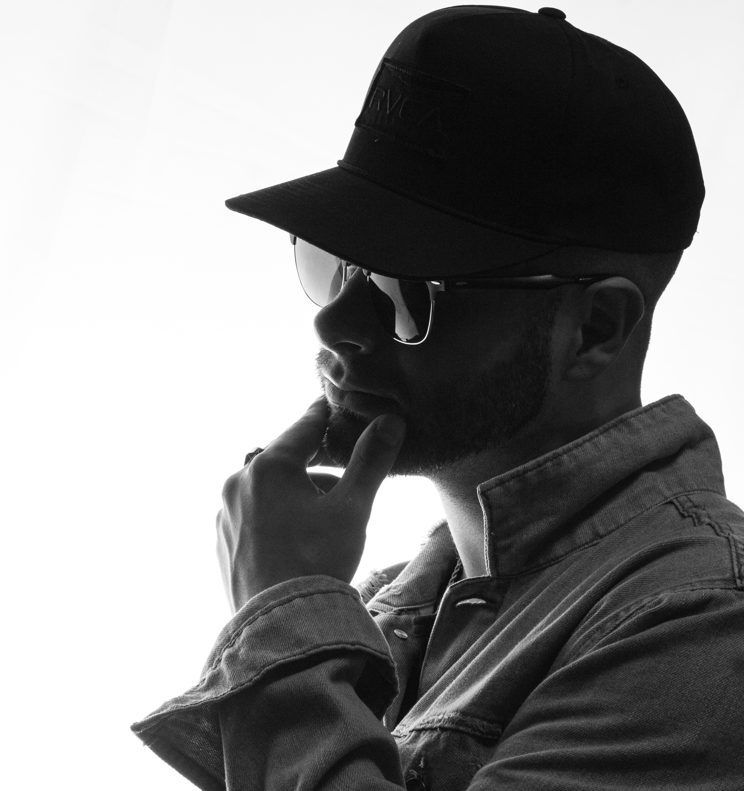
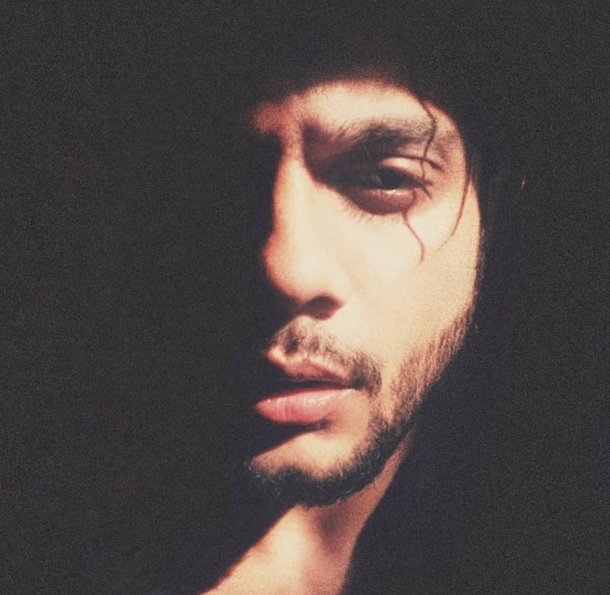

- 
-
Cartermusic
Founder, Host & Creative Director
A 10+ Year Party Rock DJ, Carter has become a multifaceted artist and creative entrepreneur. He has performed and worked with some of the biggest artists to visit Canada's East Coast such as Loud Luxury, Mac Miller, A$AP Ferg, Dragonette & Fat Joe to name a few. In addition to founding The Jibfest Weekender, Atlantic Canada's biggest winter music festival, and The #OTFG Neon Paint Party Tours, Carter can also be found teaching Music Lessons to upcoming DJ's, running backline at some of your favorite shows and playing opening DJ support for artists like Nelly, Grandtheft, DVBBS, and many more.
- 
-
Raza Gilani
Co-Founder, Producer & Editor
Raza Gilani is a Filmmaker and Content creator from Toronto, Ontario. He creates and produces content under his alias VIVIR and has recently been working as the Team Videographer and Digital Content Creator for St. John’s Edge, NBL Canada. He also manages and produces Video and Digital Media for The Jibfest Weekender and The Bestkind BBQ musical festivals. In addition to this, Raza co-produces a podcast called “The Creatives Talk Shop”, that hosts conversations for aspiring Creatives, they Interview veterans in the creative industry, their lifestyle and host conversations about mental health. Raza is currently pursuing his second Undergrad Arts degree with a specialization in Broadcasting, television and Radio at Centennial college.